- 1.Using a fact about parallelograms, show how to tile the plane using any given triangle. (Hint: Can you use the parallelogram tiling in the introduction?)
- 2.Mark the midpoint of the line drawn on the paper (see Fig. 12.33), given that the horizontal lines are equally spaced. Justify your answer.
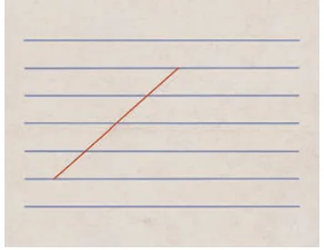
Fig. 12.33 - 3.You know that the sum of angles of a quadrilateral is \(360^\circ\), even for a non-convex quadrilateral. (Recall the proof.) Now consider a self-intersecting quadrilateral ABCD, where AB and CD intersect at point E. Show that \(\angle A + \angle B + \angle C + \angle D < 360^\circ\). Can you construct ABCD such that \(\angle A + \angle B + \angle C + \angle D = 2^\circ\)?
- 4.In a parallelogram ABCD, two points P and Q are taken on diagonal BD such that \(DP = BQ\) (see Fig. 12.34). Show that APCQ is a parallelogram.
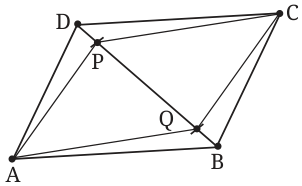
Fig. 12.34 - 5.A right-triangle shaped cutout of a paper is folded such that point A touches point B (Fig. 12.35). Show that the crease line can be used to find the midpoint of not only AB but also that of AC.
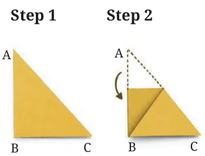
Fig. 12.35 - 6.You saw how to use the Midpoint Theorem to divide a given triangle into 4 congruent triangles. Can we divide a triangle into 3 congruent triangles? This exercise shows us how to do that and more, provided we are allowed to cut and reassemble.
- (i)Draw medians AP, BQ and CR of \(\triangle ABC\), meeting in a common point M. Cut along each median to get 6 triangles. Show with justification how to assemble the 6 pieces into 3 congruent triangles! (Hint: Align \(\triangle MPB\) and \(\triangle MPC\) along equal sides PB and PC, matching P with itself and B with C.) Prove that you get a triangle. What are its side lengths?
- *(ii)
Repeat the procedure with each of the 3 assembled triangles you got in (i). Show that each of the resulting 9 triangles has sides \(\frac{AB}{3}\), \(\frac{BC}{3}\) and \(\frac{AC}{3}\).
The procedure and the result above were unnoticed till 2014, when they were discovered by Lee Sallows, an amateur mathematician!
- (iii)
Naturally, we can next ask about the possibility of cutting a triangle and reassembling it into 2 congruent triangles. You were asked this question in the chapter Measuring Space: Perimeter and Area. Can you solve this now? (Hint: Use median AP in \(\triangle ABC\) and then a median of \(\triangle APB\).)
For any two given figures with straight sides, we can ask whether one figure can be cut (using only straight cuts) into pieces and reassembled to make the other. This notion is called scissors congruence. The figures need not be in the plane. Research on such questions at a higher level is ongoing.
- 7.A more general midpoint theorem and its converse. In a quadrilateral ABCD, suppose \(AB \parallel DC\). Recall that such ABCD is called a trapezium. Let E be the midpoint of AD. A line drawn through E intersects side BC at F.
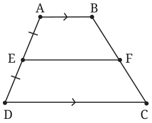
Fig. 12.36 - (i)If \(EF \parallel AB\), then show that F is the midpoint of BC. Conclude that \(EF = \frac{(AB + CD)}{2}\).
- (ii)
If F is the midpoint of BC, then show that \(EF \parallel AB\).
There are at least two ways to solve (ii). Do it directly by using the midpoint M of BD and showing that EM and FM are the same lines. Or use (i) along with the same idea used in the second proof of the converse of the Midpoint Theorem. Which way do you think is simpler?
- 8.The diagonals AC and BD of a parallelogram ABCD intersect at O. A line through O meets AB and CD at points P and Q respectively. Show that O is the midpoint of PQ. (Multiple proofs are possible. Which is the simplest?)
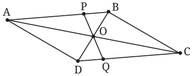
Fig. 12.37 - *9.ABCD is a trapezium with parallel sides \(AD = 3\) cm and \(BC = 5\) cm. E and F are the midpoints of the non-parallel sides. Find the ratio of the areas of the 4-gons AEFD and EBCF.
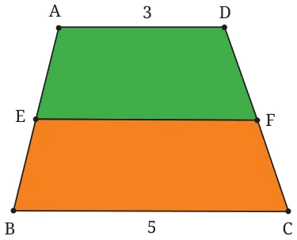
Fig. 12.38 - 10.Consider 4 points A, B, C, D in the plane with no three collinear. Answer the following questions. Some answers may require you to consider different cases, depending on how the points are positioned in the plane.
- (i)How many different quadrilaterals do they form if the quadrilateral is allowed to be self-intersecting or non-convex?
- (ii)How many of these quadrilaterals are self-intersecting? How many are convex?
- 11.Suppose P is a point on side AB of \(\triangle ABC\) and the line through P parallel to BC meets AC in point Q. For parts (i) to (iii), assume \(AP = 1\), \(AQ = \sqrt{5}\), and see Fig. 12.39.
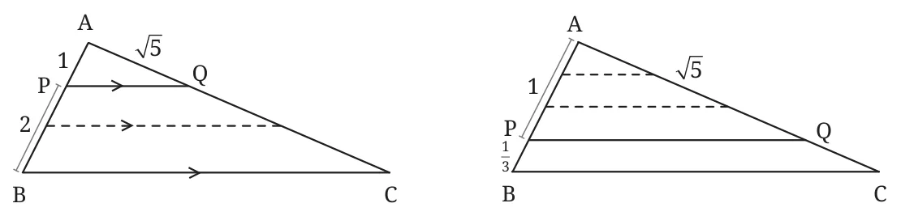
Fig. 12.39 - (i)If \(PB = 2\) find QC. (Hint: See the dotted line)
- *(ii)If \(PB = \frac{1}{3}\) find QC. (Hint: See the dotted lines)
- *(iii)If \(PB = \frac{2}{3}\) find QC. (Hint: Divide both PB and AP suitably.)
- *(iv)Show that if \(\frac{AP}{PB}\) is a rational number, then \(\frac{AP}{PB} = \frac{AQ}{QC}\). In Grade 10, you will prove this equality without assuming \(\frac{AP}{PB}\) is rational. That will require a new idea.
- 12.
- (i)Suppose ABCD is a parallelogram and M, N are midpoints of AB and CD respectively. Show that segments DM and BN trisect segment AC.
- (ii)Use part (i) to find a procedure to trisect any given segment PQ. Find two other ways to trisect PQ, one using Exercise 11 above and a third using the Centroid Theorem.
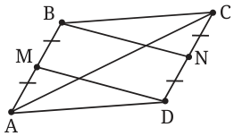
Fig. 12.40 - 13.Is the Midpoint Theorem for Quadrilaterals (Theorem 9) true when the quadrilateral is non-convex? How about when it is self-intersecting? Experiment and check. The pictures may look strange, but the theorem appears to be true.
- (i)Can you explain why this is so? See the geometric reasoning in the text.
- (ii)There is one exception: In a very special case the Varignon parallelogram becomes a single segment. When will this happen?
- *(iii)Does your reasoning apply even when ABCD is non-planar?
- 14.Let P, Q, R, S be four points on sides AB, BC, CD and DA respectively of a quadrilateral ABCD. Suppose PQRS is a parallelogram. Must P, Q, R and S be midpoints of the respective sides? This can be considered a possible converse question to Theorem 9.
- 15.
- (i)
Complete the following proof of the Midpoint Theorem. Extend segment PQ beyond Q until point S. By how much should we extend PQ?
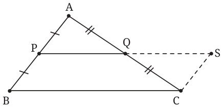
Fig. 12.41 It would be good to be able to prove that \(\triangle APQ \cong \triangle CSQ\). (Why?) Use this as a guide to specify the location of S and then complete this proof.
- (ii)Give a similar proof of the converse of the Midpoint Theorem (Theorem 7). Start by extending PQ up to a suitable point S.
- (i)
- *16.Review all the properties of a rhombus/rectangle/square that you proved in Grade 8. Formulate a converse of each. Decide if the converse is true. There are many possibilities here!
- *17.Show that the sum of angles of a non-planar quadrilateral is always less than \(360^\circ\). Can you find a non-planar quadrilateral ABCD for which \(\angle A + \angle B + \angle C + \angle D = 2^\circ\)? (Hint: Think of a diagonal, say AC, as a hinge around which triangles ABC and ADC can rotate.) What happens to each angle of ABCD as you do this rotation?
- *18.
Let us see a third method to tile the plane using a 4-gon.
Focus on only two coloured copies of SOME sharing a vertex. What do you see? It appears that each 4-gon is just a shifted copy of the other. Let us see exactly how. Draw two copies of SOME as shown in Fig. 12.42 so that the diagonals EO and E′O′ are collinear with \(O = E'\). Now place a cutout of one copy on top of SOME with diagonal EO drawn on it. Slide this cutout so that segment EO moves along EO′ until EO matches E′O′. Verify that your cutout exactly matches S′O′M′E′.
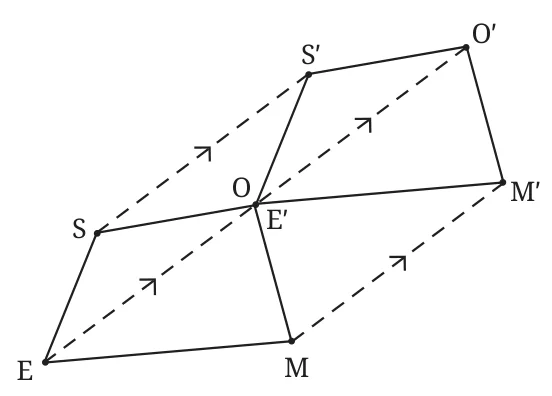
Fig. 12.42 - (i)Prove the exact match of SOME with S′O′M′E′ using four parallelograms.
- (ii)Follow the described procedure along each diagonal of the starting coloured 4-gon in both directions to get 4 new 4-gons. Using these 4 copies, repeat the procedure 4 more times to place 4 new copies, resulting in a 3 by 3 grid of 9 copies exactly like the 9 coloured copies in Fig. 12.42. These 9 copies meet each other only at vertices and once again the blank spaces among them also form 4-gons congruent to SOME!
- *19.Is there a 4-gon with given side lengths?
- (i)Recall the following fact about triangles and check it by construction. For given positive numbers \(a, b, c\), is there a triangle whose sides have these lengths? The answer is Yes exactly when the sum of any two numbers is greater than the third. If we arrange the numbers in increasing order (suppose \(a \le b \le c\)), then this amounts to requiring \(a + b > c\). (Hint: Start by drawing a segment of length \(c\).)
- (ii)Suppose a 4-gon has 2, 5, 11 as three side lengths. Can the length of the fourth side be 100? Can it be 10? Can it be 1? What are the possible lengths of the fourth side?
- (iii)For given positive numbers \(a, b, c, d\), how will you decide if there is a 4-gon whose sides have these lengths?
- *20.Counting diagonals of a polygon.
- (i)How should we define a diagonal of an \(n\)-gon? How many diagonals does an \(n\)-gon have? Make a table for small values of \(n\). A 3-gon has no diagonals. A 4-gon has 2. How many diagonals does a 5-gon have? A 6-gon? Try to find a pattern and guess the answers for \(n = 7\) and \(n = 8\). Check your guesses by systematic counting.
- (ii)Can you guess a formula for the number of diagonals? How many diagonals get added when we increase the number of sides by 1? Can you now justify why the formula you guessed is true for all \(n\)?
- *21.Sum of angles of a polygon. What is the sum of angles of a (planar non-self-intersecting) \(n\)-gon? We know that the answer is \(180^\circ\) for \(n = 3\) and \(360^\circ\) for \(n = 4\). Find the next few values. Then find a formula in terms of \(n\) and prove it.
- *22.
Multiple converses to a theorem. Let us see how multiple statements can be considered converses to the Midpoint Theorem and how Theorem 7 is one of them.
To formulate a converse we should express the original statement in “If … then …” form. For a complex statement, there may be multiple ways to do that. The Midpoint Theorem starts with \(\triangle ABC\) and points P and Q on sides AB and AC respectively. The theorem has two assumptions and two conclusions, which we have named for further discussion.
Assumptions: (P MID) P is the midpoint of AB, and (Q MID) Q is the midpoint of AC. Conclusions: (PRLL) \(PQ \parallel BC\), and (HALF) \(PQ = \frac{BC}{2}\). Let us use these four named conditions to discuss various possible statements.
- (i)A natural converse of the Midpoint Theorem would be: “If (PRLL) and (HALF) are true, then (P MID) and (Q MID) are true.” Write out this statement fully. Experiment and see that it seems to be true! Prove the statement. (Hint: Try to run a proof of the Midpoint Theorem backwards.)
- (ii)To see Theorem 7 as a converse of the Midpoint Theorem, we first write the Midpoint Theorem as follows: “Suppose P is the midpoint of side AB of \(\triangle ABC\) and Q is a point on side AC. If Q is the midpoint of AC then \(PQ \parallel BC\).” (Also \(PQ = \frac{BC}{2}\), but let us set that aside for now.) Write the converse of the second sentence in quotes by keeping the first sentence the same. Verify that Theorem 7 is what you get! (And \(PQ = \frac{BC}{2}\) also follows.) Now write Theorem 7 in terms of the four named conditions.
- (iii)
The discussion so far suggests that it is reasonable to take two of the four listed statements as assumptions and ask if the other two are true. Verify that only one such combination remains to be examined. “If (P MID) and (HALF) are true, then can we conclude (Q MID) and/or (PRLL)?” Write this out in words. This is a precise version of question (1) stated before Theorem 7. Can you answer it?
In the text, why did we focus only on Theorem 7 among the multiple possibilities? Because Theorem 7 turns out to be particularly useful. It is still important to pursue various avenues while exploring a subject: often it is only after examining multiple possibilities that we can judge what is most valuable.
- *23.Validity of tiling methods. Show using reasoning that each of the three tiling methods we saw produces a tiling of the plane using the given 4-gon. You have to prove that when we place new copies using any of the three procedures, the entire plane is covered with no gaps and no overlaps. First, think carefully about what it means to prove this. Then find a proof for each procedure.
- *24.What fraction of the square is shaded?
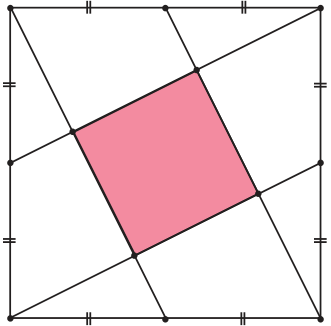
Fig. 12.43